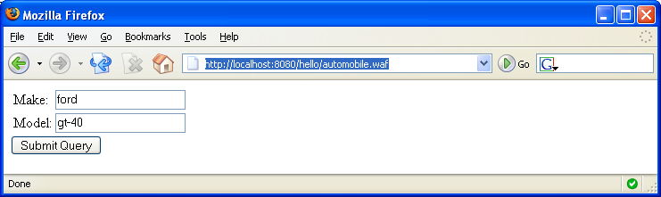
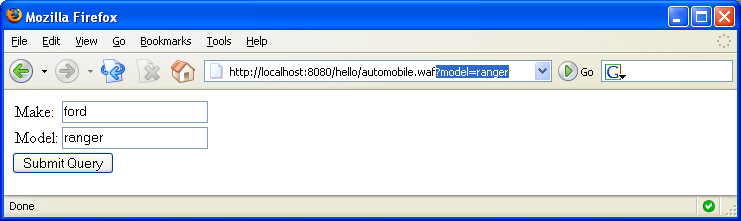

This tutorial is available to give a quick glimpse of how to use Waffle. It touches on each of the main components that make up Waffle.
The term Controller is probably familiar to those who have worked with other web frameworks. An Controller in Waffle can be any java object (i.e. Pojo). However, in order for a Pojo to be considered an Controller in Waffle it needs to be registered with the Registrar. The Registrar is a simple class that your application must implement. The Registrar provides a few methods that allows you to register your pojo's as Controllers. For complete details on the Registrar have a look at the Registrar section.
Now we will write a very simple class to use as an Controller. The class below is really nothing more than a simple bean type of object.
public class Automobile implements Serializable {
private String make = "ford";
private String model = "gt-40";
public String getMake() {
return make;
}
public void setMake(String make) {
this.make = make;
}
public String getModel() {
return model;
}
public void setModel(String model) {
this.model = model;
}
}As stated earlier, a Controller is not an Controller in Waffle until it has been registered with the Registrar. So now we will create a simple Registrar class and register the Automobile class with it. The MyRegistrar class below defines the method "session" and within that method it calls register("automobile", Automobile.class);, which registers our Automobile class as an Controller under the name "automobile". Registration is not limited to Controllers because any component, service, factory, etc... can be registered. Detailed examples of this will be discussed later.
public class MyRegistrar extends org.codehaus.waffle.registrar.AbstractRegistrar {
public MyRegistrar(Registrar delegate) {
super(delegate);
}
public void session() {
register("automobile", Automobile.class);
}
}While Waffle does not require any proprietary XML configuration files we still must create a web.xml. The web.xml example below has four points worth mentioning.
<?xml version="1.0" encoding="UTF-8"?>
<web-app version="2.4"
xmlns="http://java.sun.com/xml/ns/j2ee"
xmlns:xsi="http://www.w3.org/2001/XMLSchema-instance"
xsi:schemaLocation="http://java.sun.com/xml/ns/j2ee
http://java.sun.com/xml/ns/j2ee/web-app_2_4.xsd">
<display-name>Waffle Tutorial Example</display-name>
<!-- 1. This is how an application registers it custom Registrar -->
<context-param>
<param-name>org.codehaus.waffle.registrar.Registrar</param-name>
<param-value>MyRegistrar</param-value>
</context-param>
<!-- 2. Waffle context listener (ServletContext and HttpSession) -->
<listener>
<listener-class>org.codehaus.waffle.context.WaffleContextListener</listener-class>
</listener>
<!-- 3. Waffle request filter (responsible for request level context) -->
<filter>
<filter-name>WaffleRequestFilter</filter-name>
<filter-class>org.codehaus.waffle.context.WaffleRequestFilter</filter-class>
</filter>
<filter-mapping>
<filter-name>WaffleRequestFilter</filter-name>
<url-pattern>*.waffle</url-pattern>
</filter-mapping>
<!-- 4. Register Waffle's FrontController servlet -->
<servlet>
<servlet-name>waffle</servlet-name>
<servlet-class>org.codehaus.waffle.servlet.WaffleServlet</servlet-class>
<init-param>
<param-name>view.suffix</param-name>
<param-value>.jsp</param-value>
</init-param>
<load-on-startup>1</load-on-startup>
</servlet>
<servlet-mapping>
<servlet-name>waffle</servlet-name>
<url-pattern>*.Controller</url-pattern>
</servlet-mapping>
</web-app>We will create a very simple view to display the content of the Controller. The following example uses a JSP and simply displays the values of the Controller.
<%@ page contentType="text/html;charset=UTF-8" language="java" %>
<%@ taglib uri="http://java.sun.com/jsp/jstl/core" prefix="c" %>
<html>
<form action="automobile.waffle">
<table>
<tr>
<td>Make: </td>
<td>
<input type="text" value="<c:out value='${controller.make}'/>" name="make"/>
</td>
</tr>
<tr>
<td>Model: </td>
<td>
<input type="text" value="<c:out value='${controller.model}'/>" name="model"/>
</td>
</tr>
</table>
<input type="submit"/>
</form>
</html>An application built with Waffle is similar to most other Java web based applications. The following provides an overview of how you might layout the code for this tutorial:
+--- WEB-INF/
+--- classes/
+--- Automobile.class
+--- MyRegistrar.class
+--- lib/
+--- jstl.jar
+--- standard.jar
+--- ognl.jar
+--- picocontainer.jar
+--- waffle-1.x.jar
+--- web.xml
+--- automobile.jspNow the application can be deployed to a Servlet container (e.g., Tomcat, Jetty). So when we run the application and direct the browser to http://localhost:8080/hello/automobile.waffle we see the following:
When Waffle's front controller, WaffleServlet, handled this request it first located the "automobile" Controller, which we registered earlier to the session.
We can also exercise the ability to bind values from the request directly onto the Controller. If we append the value "?model=ranger" to the original url we will now have: http://localhost:8080/hello/automobile.waffle?model=ranger. Notice that the url and the value of the Model field has been updated.
This has only been an introduction to Waffle and it provides a good starting point to understanding how it works. Continue on to Tutorial: Part two to see how ControllerMethods can be dynamically invoked on Controllers.